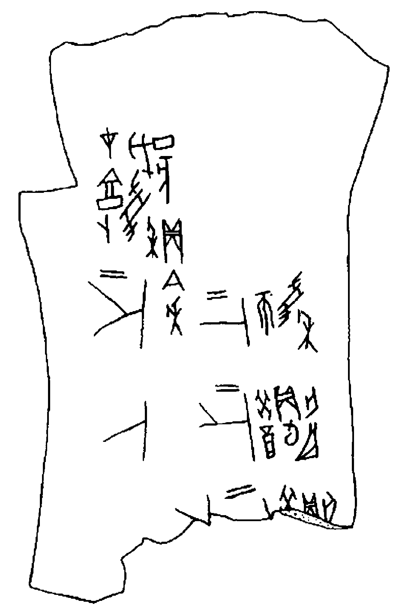
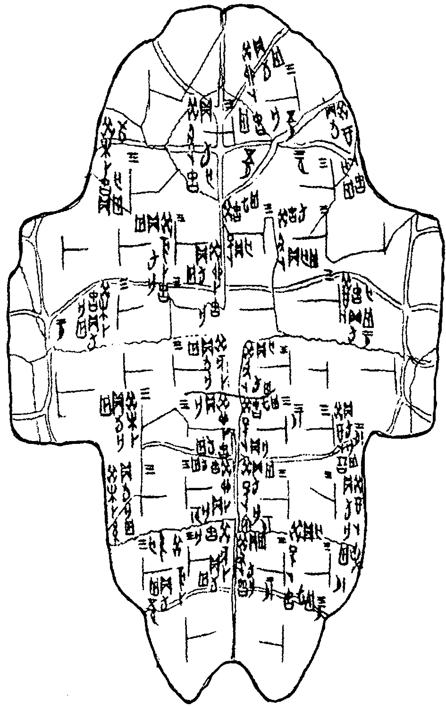

Do período mais antigo — arcaico — da história da língua chinesa, podemos ter conhecimento por meio das "inscrições adivinhatórias", datadas dos séculos XIV a XI a.C., ou seja, da segunda metade da era Shang-Yin.
Esses textos adivinhatórios de Yin foram descobertos pela primeira vez em 1899. Escavações sistemáticas da capital Yin, perto da cidade moderna de Anyang (província de Henan), revelaram para a ciência dezenas de milhares de inscrições — os mais antigos documentos escritos da Ásia Oriental. Eles puderam ser preservados até os dias atuais graças ao fato de terem sido feitos em materiais resistentes à decomposição — omoplatas bovinas e carapaças de tartarugas.
Esses objetos eram usados na corte do governante Yin (wang) para adivinhações realizadas diariamente por sacerdotes especializados. As anotações sobre o conteúdo e os resultados dessas adivinhações constituem a principal fonte para o estudo da língua chinesa arcaica.
Os textos adivinhatórios possuem várias características, cujo conhecimento é necessário para compreender corretamente seu conteúdo.
Demonstração do processo de adivinhação com ossos
Vídeo: processo de aquecimento do osso, surgimento das rachaduras e inscrição dos caracteres
A primeira característica das inscrições Yin é a padronização de sua fórmula.
Na forma mais completa, uma inscrição adivinhatória consiste em quatro partes:
A primeira é introdutória, onde são indicados a data da adivinhação e o nome do sacerdote que a realizou (em inscrições posteriores, às vezes também o local onde o ritual foi realizado). Essa primeira parte consiste em algumas palavras, sendo a última delas 貞zhēn "perguntar" (às vezes, a parte introdutória pode ser reduzida apenas a essa palavra).
A segunda parte, principal, começa após a palavra 貞zhēn e, diferentemente da primeira, é uma frase interrogativa, e não narrativa: registra o conteúdo da pergunta feita pelo adivinhador.
A terceira parte é introduzida pelas palavras 王占曰wáng zhān yuē "O rei leu a resposta": o direito de determinar a resposta à pergunta cabia ao governante.
A quarta parte indica se a previsão se concretizou e quando isso ocorreu.
Deve-se notar que a padronização da fórmula não significa uniformidade no conteúdo real dos textos Yin. Pelo contrário, segundo o costume, praticamente nenhum evento importante era iniciado sem antes consultar a vontade da divindade suprema. Por isso, as inscrições adivinhatórias contêm informações sobre os mais diversos aspectos da vida social, condições naturais, etc.
Outra característica importante das inscrições é sua serialidade.
O adivinhador geralmente fazia várias perguntas seguidas, relacionadas por conteúdo, mas distintas em forma. Essa circunstância facilita consideravelmente a análise gramatical do texto. Em uma série de inscrições, é possível identificar imediatamente palavras que permanecem inalteradas, enquanto outras são substituídas ou omitidas.
O estudo das inscrições Yin mostrou que elas pertencem a diferentes períodos da história de Yin. O pesquisador chinês Dong Zuobin identificou cinco desses períodos, correspondentes aos reinados dos seguintes reis:
Wu Ding;
Zu Geng, Zu Jia;
Lin Xin, Kang Ding;
Wu Yi, Wen Ding;
Di Yi, Di Xin.
Nas inscrições de diferentes períodos, não foram encontradas diferenças fundamentais na estrutura gramatical da língua (exceto por uma única palavra funcional, tratada na lição 9). Por isso, como textos para o estudo do chinês arcaico, utilizamos principalmente as inscrições do primeiro período (reinado do rei Wu Ding), que se destacam pela maior completude e pela abundância de séries.
Estudos especializados sobre a gramática do chinês arcaico são poucos. A maioria foi produzida por linguistas chineses. Em russo, devem-se mencionar os trabalhos de M. V. Sofronov* e M. V. Kryukov**. Observações gramaticais sobre a língua dos textos Yin, contidas no livro de Yu. V. Bunakov***, atualmente devem ser consideradas obsoletas.

Osso com inscrição adivinhatória

Carapaça de tartaruga com inscrições adivinhatórias
* Sofronov, M. V. Para a caracterização tipológica da língua Yin // História étnica primitiva dos povos da Ásia Oriental. Moscou, 1977.
** Kryukov, M. V. A língua das inscrições Yin. Moscou, 1973.
*** Bunakov, Yu. V. Ossos adivinhatórios de Henan (China). Moscou — Leningrado, 1935.
Do período mais antigo — arcaico — da história da língua chinesa, podemos ter conhecimento por meio das "inscrições adivinhatórias", datadas dos séculos XIV a XI a.C., ou seja, da segunda metade da era Shang-Yin.
Esses textos adivinhatórios de Yin foram descobertos pela primeira vez em 1899. Escavações sistemáticas da capital Yin, perto da cidade moderna de Anyang (província de Henan), revelaram para a ciência dezenas de milhares de inscrições — os mais antigos documentos escritos da Ásia Oriental. Eles puderam ser preservados até os dias atuais graças ao fato de terem sido feitos em materiais resistentes à decomposição — omoplatas bovinas e carapaças de tartarugas.
Esses objetos eram usados na corte do governante Yin (wang) para adivinhações realizadas diariamente por sacerdotes especializados. As anotações sobre o conteúdo e os resultados dessas adivinhações constituem a principal fonte para o estudo da língua chinesa arcaica.
Os textos adivinhatórios possuem várias características, cujo conhecimento é necessário para compreender corretamente seu conteúdo.
Demonstração do processo de adivinhação com ossos
A primeira característica das inscrições Yin é a padronização de sua fórmula.
Na forma mais completa, uma inscrição adivinhatória consiste em quatro partes:
Deve-se notar que a padronização da fórmula não significa uniformidade no conteúdo real dos textos Yin. Pelo contrário, segundo o costume, praticamente nenhum evento importante era iniciado sem antes consultar a vontade da divindade suprema. Por isso, as inscrições adivinhatórias contêm informações sobre os mais diversos aspectos da vida social, condições naturais, etc.
Outra característica importante das inscrições é sua serialidade.
O adivinhador geralmente fazia várias perguntas seguidas, relacionadas por conteúdo, mas distintas em forma. Essa circunstância facilita consideravelmente a análise gramatical do texto. Em uma série de inscrições, é possível identificar imediatamente palavras que permanecem inalteradas, enquanto outras são substituídas ou omitidas.
O estudo das inscrições Yin mostrou que elas pertencem a diferentes períodos da história de Yin. O pesquisador chinês Dong Zuobin identificou cinco desses períodos, correspondentes aos reinados dos seguintes reis:
Nas inscrições de diferentes períodos, não foram encontradas diferenças fundamentais na estrutura gramatical da língua (exceto por uma única palavra funcional, tratada na lição 9). Por isso, como textos para o estudo do chinês arcaico, utilizamos principalmente as inscrições do primeiro período (reinado do rei Wu Ding), que se destacam pela maior completude e pela abundância de séries.
Estudos especializados sobre a gramática do chinês arcaico são poucos. A maioria foi produzida por linguistas chineses. Em russo, devem-se mencionar os trabalhos de M. V. Sofronov* e M. V. Kryukov**. Observações gramaticais sobre a língua dos textos Yin, contidas no livro de Yu. V. Bunakov***, atualmente devem ser consideradas obsoletas.